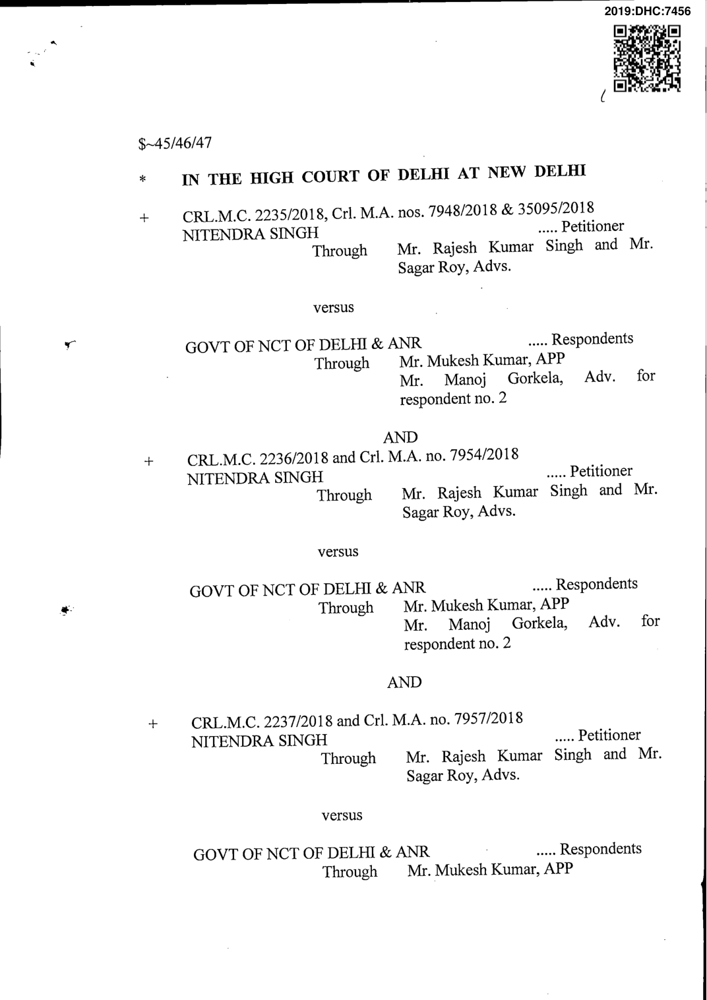
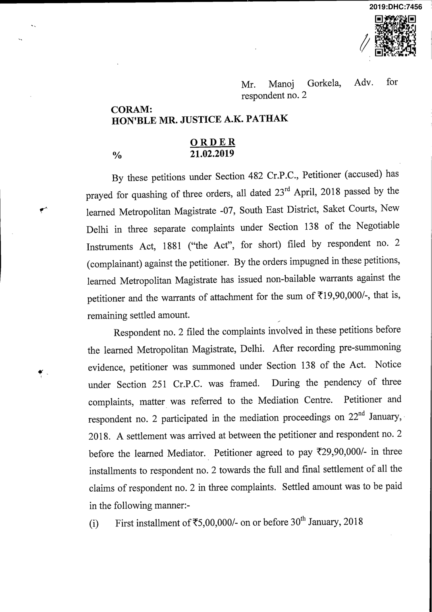
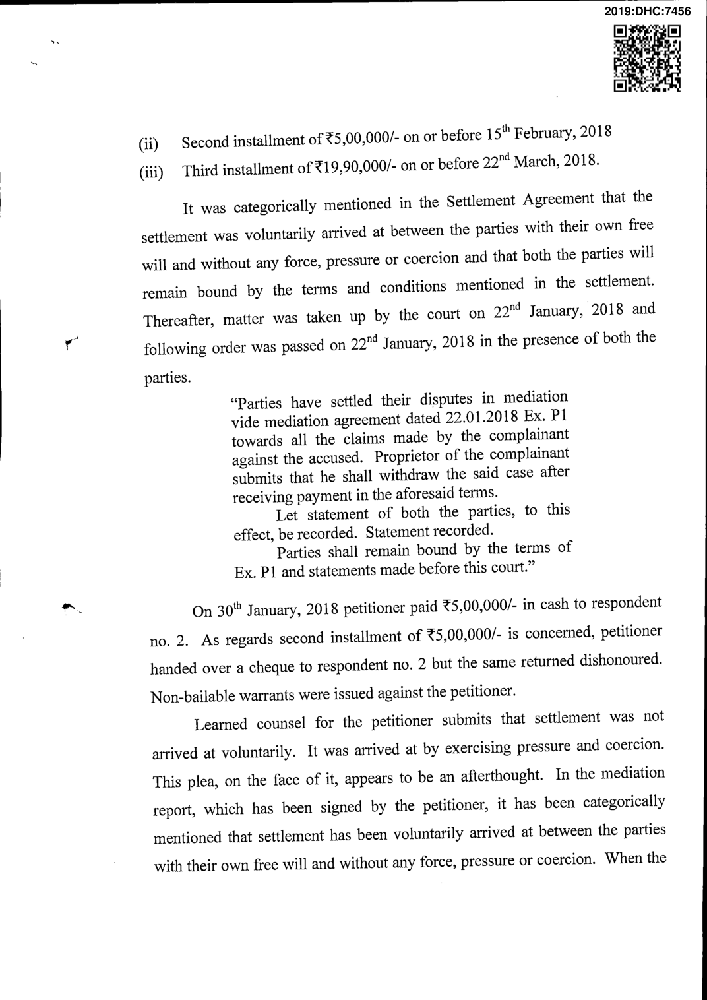

/> matter was taken up in court on 22"^ Januaiy, 2018 petitioner did not take up any such plea. Rather, his statement was recorded in court, wherein he confirmed having arrived at the settlement before the Mediation Centre. Accordingly, Settlement Agreement was exhibited as Ex. P-1. It is further noted that petitioner even paid ?5,00,000/- in cash to respondent no. 2towards the first installment, which was payable on 30^'' January, 2018. He even issued a cheque with regard to the second installment, which was unfortunately dishonoured. In Dayawati vs.Yogesh Kumar Gosain MANU/DE/3173/2017, a Division Bench of this court has held that in the event of default or noncompliance or breach of settlement agreement by the accused persons, the Magistrate would pass order under Section 431 read with Section 421 of the Cr.P.C. to recover the amount agreed to be paid by the accused in the same manner as afine would be recovered; besides other action as permissible in law to enforce compliance with the undertaking as well as the orders of the court based thereon, including proceedings under Section 2(b) of Contempt of courts Act, 1971. In view of the above, I do not find any perversity in the impugned orders. Petitions are dismissed. Amount, lying deposited before the trial court, be released to the respondentno. 2. Miscellaneous applications are disposed ofas infructuous. A.K. PATHAK, J. FEBRUARY 21, 2019 r.bararia